Systems that run on your machines
Workflow design, operational architecture, and working software for local-first and on-prem environments.

~80%
less manual admin after one retail digitization build
10x
order capacity readiness on the same engagement
7
systems designed and shipped across retail, fitness, and SaaS
What I build
- Local-first desktop and web apps
- On-premise deployments, air-gapped friendly
- Operational and systems architecture
- Automation and integration: APIs, CLIs, services
- Data pipelines and internal tools
In plain language
I help teams turn messy processes into reliable software. Tools that work without the cloud, run on your own network, and are easy to use every day.
- Make current workflows faster and clearer
- Replace spreadsheets with simple apps
- Keep your data local and in your control
For engineers
- CRDT and local-first patterns, sync, conflict handling
- On-prem orchestration, offline-first UX, background workers
- Typed APIs, event pipelines, observability, automated deploys
How I work
Discover
Map the current process together and agree on the target state.
Prototype
De-risk decisions with the simplest working version of the fix.
Ship
Production build with security, resilience, and maintainability first.
Hand off
Clear documentation, runbooks, and ownership from day one.
Have a systems problem to solve?
Tell me about your context. I will propose an approach and a path to a working solution.
Start a project